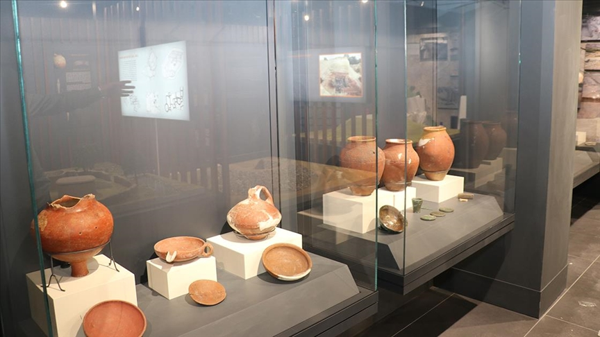
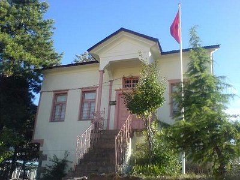
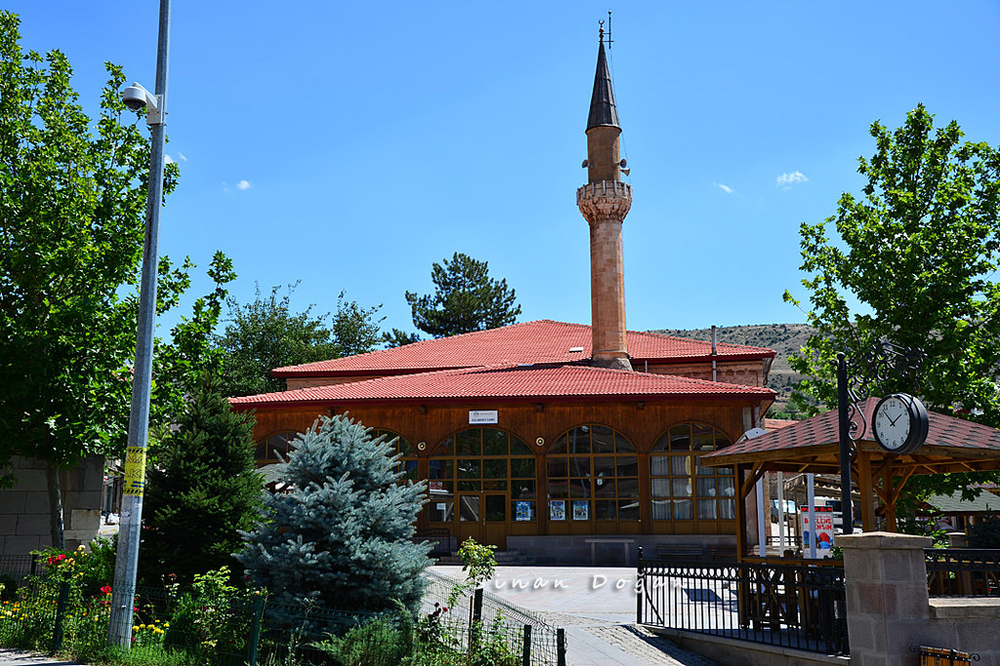
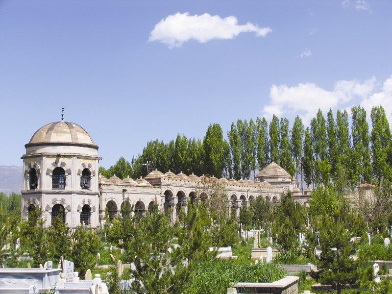

Erzincan Kültürel Yerler
Doğu Anadolu'nun Tarihi ve Kültürel Mirası
Müzeler

Erzincan Müzesi
Erzincan'ın zengin tarihini ve kültürel mirasını yansıtan müze, arkeolojik eserler ve etnografik koleksiyonlar sunuyor.

Refahiye Müzesi
Refahiye ilçesinin tarihi ve kültürel değerlerini sergileyen müze, yöresel eserler ve arkeolojik buluntular içeriyor.
Tarihi Yapılar

Gülabi Bey Camii
Osmanlı döneminden kalma tarihi cami, mimari özellikleri ve süslemeleriyle dikkat çekiyor.

Terzibaba Türbesi
Erzincan'ın önemli manevi değerlerinden olan türbe, tarihi ve dini önemiyle ziyaretçilerini ağırlıyor.
Kemaliye (Eğin)
Tarihi evleri, dar sokakları ve doğal güzellikleriyle ünlü Kemaliye, kültürel mirasın önemli bir parçası.
Camiler

Ulu Cami
Erzincan'ın en eski camilerinden biri olan Ulu Cami, tarihi dokusu ve mimari özellikleriyle öne çıkıyor.